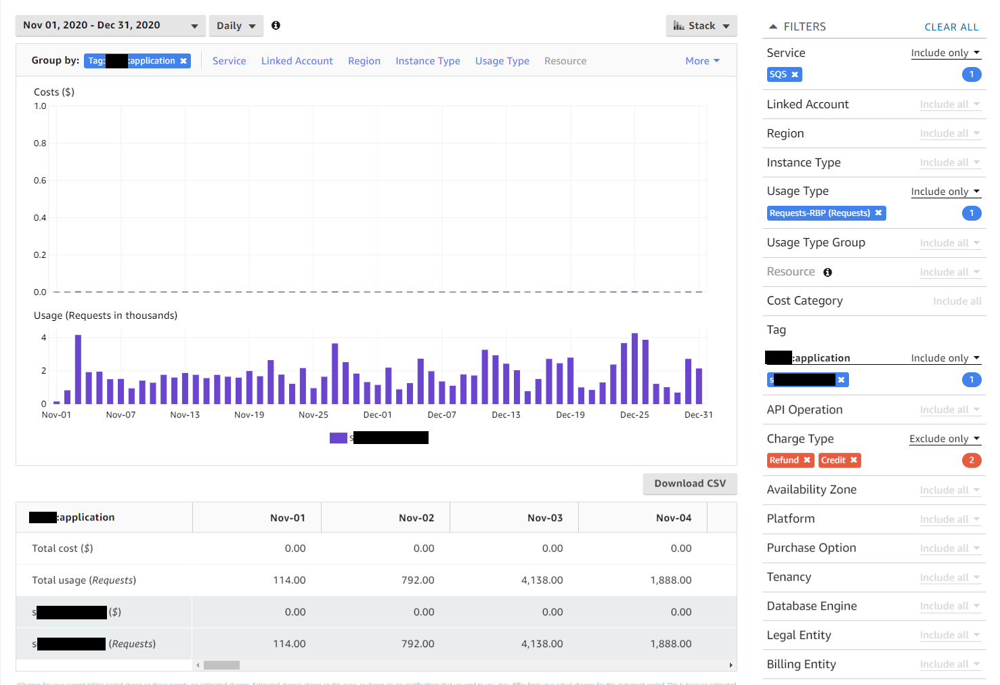
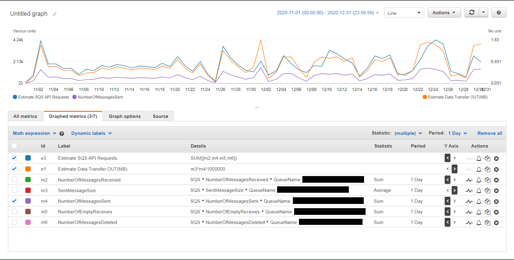

AWS SQS計費的其中一個來源是monthly requests的數量, 這邊的request根據說明就是SQS的API Action
API Actions: Every Amazon SQS action counts as a request.
最近剛好使用Cost Explorer查詢SQS的API使用量, 發現會等於使用CloudWatch Metrics的四個Metric
- NumberOfMessagesSent
- NumberOfMessagesReceived
- NumberOfMessagesDeleted
- NumberOfEmptyReceives
SQS的API使用量 = NumberOfMessagesSent + NumberOfMessagesReceived + NumberOfEmptyReceives + NumberOfMessagesDeleted


我自己的理解是假設不使用Batch操作的情況, 使用SQS的一個message從進去到出來至少要使用3個API Requestsi(Send, Receive and Delete)
所以可以使用NumberOfMessagesSent * 3 預估SQS API Requests的使用量
參考
- Amazon SQS pricing
- Available CloudWatch metrics for Amazon SQS
- AWS SQS Batch Operations